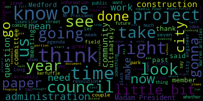
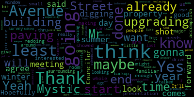
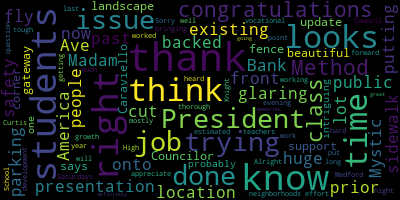

AI-generated transcript of City Council 06-07-22
English | español | português | 中国人 | kreyol ayisyen | tiếng việt | ខ្មែរ | русский | عربي | 한국인
Back to all transcripts
Heatmap of speakers
[Morell]: The 23rd regular meeting of the Medford City Council June 7 2022 is called to order Mr. Clerk, please call the roll.
[Hurtubise]: Vice President Bears.
[Morell]: Announcements accolades remembrance reports and records.
[Knight]: Individuals that have been waiting to put in a presentation this evening and we ran a little late so I'm hoping that we can get them out of here in the interest of their time.
[Morell]: Thank you.
[Knight]: And what paper is that what paper number looks like we have a public hearing and we also have on the motion.
[Morell]: On a motion of Councilor Knight to take multiple papers out of order seconded by. All those in favor. All those opposed motion passes hearings 22-357. We will know a city clerk's office notice of a public hearing the Medford City Council will hold a public hearing in the Howard F Alden chambers at Medford City Hall 85 George P has to drive Medford and via zoom on Tuesday, June 7 2022, a link to be posted no later than Friday, June 3 2022 on a petition from Needham Bank Derek Redgate and or Andrew Bolson, 270 Mystic Ave, Medford, Mass. For a special permit for a drive-through use, drive-up automated teller machine and separate bank teller window in accordance with Medford zoning ordinance table A through F4. Petition and plan may be seen in the office of the city clerk, room 103, Medford City Hall, Medford, Massachusetts. Call 781-393-2425 for any accommodations aides. TDD 71-393-2516. The city of Medford is EEOAO. a five or employer by order of the City City Council signed Adam L. Her to be city clerk advertised in the Medford transcript made 26 and June 22nd. As this is a public hearing and under our new rules first if we could have a presentation overview from the petitioner and when you're ready just your name and address for the record, please.
[SPEAKER_07]: Madam Councilor Good evening. I'd like to My name is Derek Redgate. I work, I'm a civil engineer with High Point Engineering representing Needham Bank who is here with us tonight as well for any questions that you may have. I'd like your permission and maybe your recommendation. I have, I have some graphical handouts that I'd like to hand out. If I could. You will pass them around. And then for the audience at home, in the video, I have a tripod with some graphics as well, which I can set up anywhere you think is the best viewing spot, whether it's inside or just outside. Right in front of me. Sure.
[Hurtubise]: Just wanna pass it over. Oh, yeah.
[Morell]: Shane, can you turn the camera? Yes, Shane. Shane, can you hear me? Yeah. A little out of it? All right.
[Hurtubise]: He's okay.
[Morell]: He's turning.
[Hurtubise]: I think we'll build the Taj Mahal as a drafter.
[SPEAKER_07]: Great. Again, my name is Derek Redgate. I'm with High Point Engineering in Dedham. I'm a civil engineer. Also with me tonight is representatives of Needham Bank, including Jim White, who is the Executive Vice President and Chief Administrative Officer. And then also on Zoom is the architect for the project, Ron Cocaro. So if there's any questions related to the architecture, he's available via Zoom. We're here for a special permit under section 11.6. The project's located at 270 Mystic Avenue, the intersection of Mystic Ave and Mystic Valley Parkway. It's currently a brick office building, two stories. It's about 10,300 square feet, and it's currently vacant. It's on a 26,000 square foot lot, which is a little bit more than a half an acre. The parcel is located in Zoning District C2. And under the chart for uses, drive-through uses are an allowed use with a special permit from City Council. So that is why we're here tonight. Other than that, this is a by-right project. We won't be seeking any more relief from other boards. It's strictly the, relief for a drive-through in the C2. Again, it's a 10,300 square foot brick building. It currently has 30 parking spaces and our use will be operating under the same parking demand and we'll be able to maintain the required 30 spaces. There's gonna be a full renovation of the brick building. renovation on the interior, facade renovations, which I have some graphics and are part of the handout that I gave you some renderings of that. And we'd like to locate an ATM machine, but also a full service window. And if you look at, I'm trying to, look at the plans and I can show you where it is, but it's towards the back right corner of the graphic, which we felt was the most appropriate location for the ATM and the driver. Thank you. Yeah, I think it's important though to have someone from Needham Bank also sort of talk about the history in the city with another branch and new employees and things like that.
[Morell]: Thank you, Madam President.
[Caraviello]: Thank you for your presentation. I think most of us are familiar with that building and I think it is more than enough room there to accomplish what you want. I think this will be maybe a start of the upgrading of mystic Avenue with this building. Again, if you showed the picture where you're gonna be redoing the whole property and making it, upgrading the look of it, this might be a small shot in the arm for the avenue that needs maybe to get some other people interested in the surrounding property around it. So again, the last time I think I did a survey, someone else was looking for a drive-thru window some years ago. is really not a major backup of cars, I don't think. And I've talked to the other ones, I don't think, 50, 60 a day, 70 a day, that's on the big end, and they won't all be queuing at the same time. But I think you get more than that from there. You'll be upgrading the look of the building. It'll maybe give the avenue a little bit of a shot in the eye too. Yeah, we agree, thank you.
[Morell]: Thank you, Councilor Caraviello. Councilor Scarpelli.
[Scarpelli]: Thank you, Madam President. So again, thank you for the presentation. What's glaring right now is that what we have there, what's existing there, and prior to the past location, it was a huge public safety issue because as Mystic Ave backed up, people would fly through the Bank of America parking lot, just cut over onto the sidewalk right in front. It looks like you're putting a landscape, and is that a fence right to the corner?
[SPEAKER_07]: Yeah, we're aware of the opportunity. We're gonna sign it appropriately. We're hoping to sign it where you can only enter through Mystic Avenue. And there is some traffic calming devices that are there right now in place. And so we would try to copy them in kind. But we will also look at look at that issue when we go to a final design of the site. The bank would not want people cutting through.
[Scarpelli]: Right, we know that. So that's why I would support. I think that the update looks beautiful. I think that, like Councilor Caraviello says, this should be a gateway to our, probably one of our most intriguing neighborhoods for growth and development. And it looks like it's very thorough. I appreciate your hard work on this.
[Morell]: Any other questions from the Council at this time?
[Knight]: Madam President, I for one don't have a problem with this application at all. What it does is revitalize an underdeveloped parcel. The parcel's been vacant for quite some time now. It's been somewhat of an eyesore in the neighborhood. Also, past use was a bank, future use is a bank. Putting a drive-thru teller machine in this location, I don't think it's going to be much of an issue at all. It looks like they have the appropriate lead space to queue cars up, you're not going to back up into the street, and parking and, you know, square footage. So I move approval. I second.
[Morell]: What's up, Councilor Collins.
[Collins]: Thank you, President Rowe. Thank you for the presentation. Just one question. You said that the whole building inside and out will be renovated. Will the remainder of the interior space be used as offices for Needham Bank? Will all of the interior space be used for the drive-through? I'm just curious how the rest of the building will be used.
[SPEAKER_07]: Yeah, the interior of the building will be upgraded for new and different uses that banks are currently seeing with COVID, with people working, remotely hybrid, so there'll be some workstations. If we can allow Ron Coquero on the Zoom call, he's the architect, and he could further answer that question if you think it's necessary.
[SPEAKER_02]: Thank you. Sure, sure, Derek. I'll just add a little more information. So essentially, the extent of the interior is finishes and cosmetic. limited if any changes to the actual structure and the core portion of the building, you know, the bathrooms and infrastructure service points, etc. At the end of the day, it was retail, you know, retail bank branch on the first floor, it will be a retail bank branch on the first floor. There were executive support offices on the second floor at the end of the day after the renovations, there will be executive and support offices on the second floor. So that's essentially the extent of the interior. It's it's for this for the sake of renovations, cosmetic in nature. It's not. It's not structural.
[Morell]: You could I just have your name and address for the record, please.
[SPEAKER_02]: Yes, it's rock borrow Studio Q architecture.
[Morell]: Thank you. So this is a public hearing. We do have to conduct it in a certain way before I open a public hearing. If someone from Median Bank did want to speak as you referenced, just to talk about this project. Name and address for the record, please.
[Teixeira]: Paul Evangelista, I was formerly with Century Bank in that building. And this location is a terrific opportunity for that same team that now flies under the Needham flag to move and continue to support both the local clients as well as the high-risk clients such as the cannabis industry that's coming to Mr. Gavin Medford.
[Morell]: Thank you, Mr. Evangelista. Okay, so as this is a public hearing, first we're going to open a public hearing. Is there anyone who would like to speak in favor of the paper? Be either of you if you'd like to just know your support of the paper. It's just a public hearing. We have to go through it procedurally. So I'm just asking who would like to speak in favor of the paper? That would probably be either of you. Yeah, it's not a numbers game. We have two in favor of the paper. Anyone else who would like to speak in favor of this paper?
[Hurtubise]: Just making sure.
[Morell]: Seeing none, portion of the public hearing is closed. Is there anyone who would like to speak in opposition of this paper, either in the chambers or on Zoom? Seeing none. This portion of the public hearing is closed. So we do have a motion from Councilor Knight to approve under the new council rules. Following a public hearing, a six calendar day public comment period shall commence. Public comment shall be submitted in writing by the city clerk. The council shall neither approve nor deny any matter requiring public hearing until the conclusion of the public comment period, unless waived by a majority vote of the council.
[Bears]: Motion to waive the public comment period. Second.
[Morell]: On the motion of Vice President Bears to waive the public comment period, seconded by Councilor Caraviello. All those in favor?
[Hurtubise]: Aye.
[Morell]: All those opposed? The motion passes. On the motion of Councilor Knight to approve the main paper, seconded by Councilor Caraviello. Mr. Clerk, you can please call the roll.
[Hurtubise]: Mr. Bears.
[Unidentified]: Yes.
[Hurtubise]: Councilor Caraviello. Yes. Councilor Collins. Yes. Councilor Knight. Yes. Yes. Yes. Yes. Yes. Yes. Yes. Yes. Yes. Yes. Yes. Yes. Yes. Yes. Yes.
[Morell]: Yes. Yes. Yes. Yes. Yes. Yes. Yes. Yes. Yes. Yes. Yes. Yes. Yes. Yes. Yes. Yes. Yes. Yes. Yes. Yes. Yes. Yes. Yes. Yes. Yes. Yes. Yes.
[Caraviello]: Yes. Yes. Yes. Yes. Yes.
[Morell]: Yes. Yes. Yes. Yes. Yes. Yes. Yes. Yes. Yes. Yes. Yes. Yes. Yes. Yes. Yes. Yes. Yes. Yes. Yes. Yes. Yes. Yes. Yes. Yes. Yes. Yes. Yes. Yes. Yes. Yes.
[Unidentified]: Yes. Yes. Yes.
[Morell]: Yeah, we have a full packet. OK, 22-365. Legal notice, petition for grant of location, National Grid North Andover, Massachusetts, gas main locations, Medford, Massachusetts, city clerk's office. You are hereby notified by order of the Medford City Council, a public hearing will be given at the Howard F. Alderman Memorial Auditorium, 85 George P. Hassett Drive, City Hall, Medford, Massachusetts at 7 p.m. on Tuesday, June 7th, with a Zoom link to be posted no later than June 3rd, 2022 on a petition of National Grid Incorporated for permission for the transmission and distribution of gas in and under the following public streets, lanes, highways, and places of the city of Medford and For the pipes, valves, governors, manholes, and other structures, fixtures, and appurtenances designed or intended to protect or operate said names and accomplish the objectives of said company and the digging up and opening the ground to lay or place same to install a new gas main along Riverside Ave, Bradbury Ave, and St. James Road in Medford, Massachusetts in accordance with the plan number 1378319. Wherefore it prays that after due notice and hearing as provided by law, it be granted a location for and permission for the transmission and distribution of gas in and under the following public places, lanes, highways, and places of the city of Medford and for the pipes, valves, governors, manholes, and other structures, fixtures, and appurtenances designed or intended to protect or operate said mains and accomplish the object of said purpose. On the motion of Councilor Knight to waive the remainder of the reading and have a brief presentation from Mr. Wartella, seconded by Councilor Tseng. All those in favor? All those opposed? The motion passes. We do have our city engineer on, Mr. Wartella, if you are able to give us, and we also have National Grid. So we'll defer to our city engineer, if you would like to give us a presentation or you would like to defer to National Grid and then fill in any holes.
[Wartella]: I'd like to, hello, everyone. Sorry, I couldn't be there tonight. I'd like to defer to National Grid to present.
[Morell]: So we're gonna defer to National Grid, I believe. We have Diana Cuddy on the line.
[Cunningham#]: Hi, good evening Madam Mayor City Council. My name is Diana Cuddy I'm with national grid 40 Sylvan road wall in Massachusetts, and we're here before you would have a main replacement project in the streets that were just mentioned, but we just need a grant of location for the portion in St. James road, because it is going outside of the original grand location, more than three feet away from the existing pipe. Our proposal is to install 495 feet of six-inch plastic gas main in St. James Road.
[Morell]: Thank you, Ms. Cuddy. What's the length of the project?
[Cunningham#]: For this portion of St. James, it's 495 feet. I'm sorry? For the portion in St. James Road, it's for the grand location, it's 495 feet of six-inch plastic pipe. 495 feet? Correct, yes.
[Knight]: Is there any questions from the council at this time Council night, Miss Connie welcome back I know last time you were here wasn't the most pleasant experience for you and apologize for that.
[Cunningham#]: Is this project, have any relation with the mother Riverside Avenue project that was on you here before us on previously, it does not that was with regards to MWR a asking us this is actually a project that we moved up, I believe to accommodate city paving in the area.
[Unidentified]: Okay, excellent.
[Morell]: Councilor Scarpelli.
[Scarpelli]: Sorry, thank you for being here this evening. My question is, are we, has there been issues about working on Saturdays here in Medford?
[Cunningham#]: Um, as far I don't know the answer to that. Um, it's certainly something that can be put into the permit if there is an issue or it's preferable or at night, those kind of things can go into the permit. I haven't heard of any issues on set with Saturday work though.
[Scarpelli]: Alright, so this job will be done mostly when then, you know,
[Cunningham#]: Um, typically yeah, Monday through Friday, but they, I know they do this work. This type of job is done by a contracted contractor. So, um, you know, it can be done during the evening on Saturdays.
[Scarpelli]: How long is estimated time? Do you know?
[Cunningham#]: I'm not sure because it's part of a bigger project, but this portion of it, the 495 feet would just be a couple of weeks, I would think. Thank you.
[Collins]: Thank you, President Marillyn. Thank you for being here. Just one question I saw under the conditions that our chief engineer attached to this petition. Just the first one said the recommendation that the grant of location be revised to reflect the accurate location as shown in the plan, just to make sure that the paperwork reflects where the work will actually be done. I just wanted to ask if that revision had been made or if not, if it could be what the process would be for making sure that the location is reflected accurately on the grant of location. Thank you.
[Cunningham#]: That correction was made and approved by the city engineer and submitted to.
[Knight]: Any further questions from the Council Council night, Madam President, I as one member of this body, certainly have no opposition to this project I think that I'm you know, based upon the meetings that we had earlier in the evening, even, we really need to figure out what's going on underground and get that stuff taken care of so that we can take the necessary steps to resurface our roadways into a condition that is suitable and worthy of the taxpayers driving their vehicles on. Right now, our roads are in the worst shape around. Like, you know, you know when you're entering Medford because it kind of starts shaking. So, you know, with that being said, I think that this project for 195 feet will give us an opportunity to address some underground infrastructure concerns. I'm hoping that the city engineer can speak a little bit about whether or not they coordinating any other underground infrastructure projects with the city during this period of time, while the grant location is being offered and the ground is going to be open. So maybe the city clerk and the city engineer can speak to that. I know this is Councilor Tseng's backyard, so I'm sure he's got a number of questions to ask about this coming up. but ultimately I'm hoping that maybe the city engineer can talk a little bit about our underground infrastructure there, and if the ground's open, whether or not there's a need to do any other work.
[Morell]: Go ahead.
[Wartella]: Yeah, hi. For this work, we are coordinating with National Grid to do work in our streets. This particular location is not one of those things where we're completely coordinating with ever sources work. Most of this stuff is going to be in the street, and we will, uh, you know, most of the stuff in the area is with sidewalks and other things. But I know that there will be a sidewalk replacement as well with us. So yes, thank
[Morell]: Any additional questions from the Council? Vice-Chair Bears.
[Bears]: Thank you, Madam President. Thanks, Diana, for being here. Does National Grid plan to come back before the Council regarding the larger Riverside Ave project anytime soon, or is that now on hold?
[Cunningham#]: If that's in reference to the one we brought forward a couple of years ago, as far as I know, that's on hold. We were requested by MWRA to move our gas main so they could accommodate a restoration project of their water line. And I believe that's on hold, so our work isn't necessary at this time. At some point, though, you know, we do an evaluation of our our gas lines based on either reliability or integrity. And independently of that MWRA project, we may find that it comes up for replacement, but I don't know if that's in the near future or far off at this time.
[Bears]: Thank you. Yeah, certainly if it does come back up, coordination would be preferred. Thank you.
[Cunningham#]: Of course.
[Morell]: Any further discussion? And if I could just, Ms. Cuddy, when is work anticipated to begin on this?
[Cunningham#]: I think they'd like to start right away because I do believe it is part of a paving program that the city is undertaking. So parts of the project have already been completed and they're just waiting on this last section.
[Morell]: Thank you. On the motion of Councilor, oh, sorry, it's public hearing. I need to open. So if we did have the petitioner already spoke, so as this is a public hearing, if anyone would like to speak in favor of this project, please speak up.
[Cunningham#]: I'm in favor of this project.
[Richard Orlando]: My name is Richard Orlando. I live on Winford Way in Medford. This is more just a point of information and perhaps to the city engineer. What performance criteria measurements does the city put on not only this particular contract, Contractor others in terms of just the timing, the schedule, the duration of the project, daily cleanup sweeping of the streets to basically make sure that the area where there are residents that there it minimizes the negative impact. So to the engineer, how are you managing that? And what criteria do you have?
[Morell]: There are a number of conditions for approval. I'm happy to share my copy with you, but I'll let him speak as well.
[Wartella]: that they need to speak with you guys. Correct We've set a few conditions. We can, um, also include that they need to speak with you guys and make sure that they have, um, erosion and sedimentation controls underway. Um we do supervise the projects accordingly when they're doing stuff. We said, um, we make sure that, uh, you know, their there are any issues, you know, I hear you, you can always contact my office and we will definitely be out there.
[Cunningham#]: I'd also like to add that a job of project of this scope, um, the butters do get notified. They will receive a notice and they were including the supervisor's phone number and the supervisor's name on the notices in case there's questions. Um, they are out there, um, you know, at your, um, disposal to have any questions answered that are specific to the job.
[Morell]: Also, they're on the agenda itself.
[Knight]: Madam President, I do think it's also important to point out when you look at the conditions of improvement, the city engineer's office has been able to secure some mitigation for some existing defects in the sidewalks and streets there that aren't necessarily in relation to this project, but are going to get done as part of the project mitigation purposes. That's something that I'm happy to see. It's something we've called for in the past, and I'm glad to see that it's making its way into these grants.
[Morell]: Thank you, Councilor Knight. Is there anyone else who would like to speak in favor of the paper? I do see one hand up on Zoom. If you'd like to speak in favor of the paper, name and address for the record, please.
[SPEAKER_12]: Hi, my name is Gay O'Hanasian. I had a couple of questions. My address is 239 High Street. I was wondering, if you could clarify exactly where the beginning end of this payment will be.
[Cunningham#]: So for the main replacement on St. James Road, it's basically the entire length of the road.
[SPEAKER_12]: St. James. Okay, great.
[Cunningham#]: Riverside Ave to Felsway, I believe is the far end. Yes.
[SPEAKER_12]: Okay. Yeah, it's great that the paving will be done. So to as Councilors and said to improve the streets of Medford. A couple other questions do we know and this may not be to you, maybe to engineering or public works. Are there any upcoming street openings in that area for the next three years that are known.
[Cunningham#]: I'll refer that to Owen, but usually they're coordinating.
[Morell]: To the engineer, it should... Yes, hi.
[Wartella]: Yes, there are other areas. I do not know them off the top of my head for the next three years, but if you can reach out to the office, I'll be sure to get those to you, okay?
[SPEAKER_12]: No, for this section. We don't have any planned just for this section.
[Wartella]: For St. James Road, no. We've coordinated with National Grid for this one section, yes.
[SPEAKER_12]: Great. And is the scope curb to curb? It was a little hard to understand that because it sounds like there's some sidewalk work that will be done, too, as extra mitigation.
[Wartella]: Diana should answer this question.
[Cunningham#]: I, from my understanding we are replacing this particular piece of gas mean to accommodate the city's paving so regarding the sidewalks I'm not sure, but I would assume the city's either doing centerline to curb or curb to curb but I would. Yeah.
[SPEAKER_12]: Okay, that sounds good so I would be in favor of that.
[Morell]: Thank you. Does anyone else would like to speak in favor of the paper? Not seeing any. Portion of the public hearing is closed. Is there anyone in opposition of the paper who would like to speak? Seeing none, this portion of the public hearing is closed.
[Bears]: We give them- Motion to waive the public comment period.
[Morell]: On the motion of Vice President Bears to waive the public comment period, seconded by Councilor Tseng. All those in favor?
[Unidentified]: Aye.
[Morell]: All those opposed? The motion passes. On the motion of Councilor Knight to approve the paper, seconded by Councilor Scarpelli. Mr. Clerk, please call the roll.
[Bears]: Yes.
[Hurtubise]: Yes. Yes. Yes. Yes.
[Bears]: Yes. Yes.
[Morell]: Yes. So in the affirmative zero in the negative the motion passes.
[Bears]: Motion to revert to regular order business.
[Morell]: on a motion of vice-president bears to revert to the regular order of business seconded by good one more sure correct Sure, there is a representative from Eversource on the line, I'm not sure.
[Caraviello]: So we can get our questions answered. Sure.
[Morell]: City engineer, could you speak to that as far as a future date or?
[Caraviello]: That would be more for Owen.
[Morell]: Oh sorry, I'm not sure.
[Caraviello]: Yeah.
[Morell]: He's still here. I'm not sure if you heard Councilor Caraviello just referring to a previous agenda item in which we asked for a meeting with yourself as well as the public and Eversource. On an update on the Eversource project. I don't know if you could give us an update on when we might be able to have them come out.
[Caraviello]: Yeah, like I said, fortunately, we didn't know about the meeting and we had a meeting already scheduled.
[Morell]: And I do see there is someone from Eversource on the line at the moment. Sorry, I need to unmute you.
[Wartella]: Yes, I believe Todd is here from Eversource, and I believe he's ready to speak on that, or maybe it's Tim.
[Knight]: Madam President, with all due respect, this is a pretty big issue we've been talking about for quite a bit of time, but I had no idea that they were coming tonight. I don't know if anybody else had any awareness whether or not they were coming this evening. Oh, they're here tonight to talk about it? Apparently, that's what the city engineer just mentioned.
[Wartella]: Yeah, we were asked to come last week, and I believe it was continued to this week.
[Caraviello]: Unfortunately, we were not informed that we were going to be talking about this tonight.
[Morell]: We did. Yeah, we did move it to unfinished business last week. So they could come back. So the paper is on the table, but I understand that. So I mean, yeah, we can get an update. Yeah, we can get an update. Yeah. Right. Yeah, I think we can get an update at this time. Do you have a word or the rules are suspended? Does anyone want to take that from the table?
[Bears]: Motion to take paper 22-something 361 off the table.
[Morell]: The motion of items and bears to take paper 22-361 off the table, seconded by Councilor Scarpelli. All those in favor? All those opposed? Motion passes. So Todd Lanham, if you could give us an update, a general update on where the Eversource project stands. I do think there is a need for a future meeting that is more early, more lead time to notice this so people can attend. But I think we've been waiting for this update for a very long time. speak to that. I will unmute you.
[SPEAKER_03]: Perfect. Okay. Thank you very much. Yes. Todd Lanham here with Eversource. Just for the record, office address is 247 Station Drive in Westwood, and I do have a very brief update, a very brief subset of a presentation that we actually gave to residents last week. I'm happy to share that if I may. Would that please the council?
[Morell]: Are you able to share your screen? Or could you please make him a co-host, Mr. Clerk?
[SPEAKER_03]: It's very short. And again, more than happy to come back and do this in a more in-depth forum if you'd like. But I thought at least for this forum, five short slides, a little brief narrative about where we are.
[Morell]: Thank you, Mr. Lanham. You should be able to share your screen now if you'd like to try.
[SPEAKER_03]: Let's see if we can do this. Are you seeing my title slide now?
[Morell]: Yeah.
[SPEAKER_03]: All right, perfect. Thank you. So once again, Todd Lanham with Eversource. I am here tonight just to give you a very brief presentation on where we are with this project. I'm gonna go through five slides relatively quickly, certainly be able to take some questions and answers. If we have any, I'll do my best to answer any questions that you may have, or as we've discussed, if you would like, be happy to come out and give a more detailed conversation to members of the council if you'd like.
[Morell]: please proceed.
[SPEAKER_03]: I'm trying to, um. Forward. There we go. So just to re ground everybody. I think we all know about the segment of construction that goes through Medford. What you see on the screen here is represented of the conduit or the pipe and green and red and in the boxes. Those represent the nine manholes that we on the pipe that's in Medford represents sections that have been installed. The red sections in Medford are the ones that remain. Out of the approximately 3.2 miles of pipe that we have had to install in Medford, approximately 2.7 miles of that has been completed, or roughly 87%. We have about 2,200 feet left to go. So where are we working currently? What this slide tells you kind of goes through some of the segments that we have been working on. You can see some of the completed segments. We're actively working in the locations where you currently see the blue. So that's from Mystic Valley Parkway to High Street, and then also South Street to Main Street. Those are the two sections where we currently have crews during the daytime, for mystic Valley Parkway and then we have nine crews working on the South Street and Main Street. The other sections that are in black represent some projected completion dates or activity dates, given all the activities that you heard about the coordination between a lot of different competing interests, as you heard tonight. other providers have activities going on in there. So these dates are somewhat flexible, but we try to give you an idea about when we think construction may commence and when it may complete. But again, the two in blue are the ones I wanted to focus on tonight is that's where we have active construction. So to talk about one of the work zones here between Mystic Valley Parkway and High Street, you see, if you can see on my screen, This is one section where we're currently actively working. The forecast right now is to complete this section sometime later this summer, early fall. And from there, we will go to the second segment here between High Street and Winthrop Street. These are both in the same section. Roughly speaking, we just broke them down into two individual pieces to make it a little more easy to understand, but this work right here will probably last through the end of the year. There's also the section that we talked about from South Street to Main Street that we're currently working on. You can see here both the graphic and the forecasted schedule. As we continue to work with engineering, DBW staff, public safety, we continue to try to optimize the schedules to do more work more efficiently. more timely, but this gives you a rough idea about this section of work right here. It's a very complicated corner, as it were, where we're trying to install the pipe currently. That was very, very brief. I will say this, this is, again, this is a very small subset of the entire presentation that we did earlier this week with the community group. I don't know. Oh, and if you have anything else to add, or I'm certainly happy to try and answer any questions. If you have any, but I hope that gave you at least a little bit of, of information. As far as where we're actively working, and at least some interim projections there.
[Morell]: Thank you, Mr. Mayor. Thank you.
[Caraviello]: Are you going to be doing any more digging on Mystic Avenue?
[SPEAKER_03]: We're going to be doing any more digging on Mystic Avenue. I believe the answer to that question, I'm waiting for some of my engineering friends that are on with me tonight to confirm. We are not going to be doing any more digging on Mystic Avenue, as I understand.
[Caraviello]: So is there a reason, would it be possible to start grinding and paving at least Mystic Avenue? In the meantime, seeing that you're not doing any work there during the summer before the winter comes. Because you're gonna be replacing the road.
[SPEAKER_03]: That is correct. Let me, again, I'm trying, I apologize. I'm trying to stop sharing my screen so I can get back to this. So let me just stop this here. Oh, I did the wrong thing. I apologize here. So I guess the question is, when are we going to be able to pave the Mystic Valley Parkway? Is that the correct answer? Mr. Gabb.
[Caraviello]: I mean, if that part has already been, is already complete, you're not going to be doing any more digging there. Why can't you at least get that paved at least up to Soul Street in the interest of, you know, before the end of the summer or before the winter time comes?
[SPEAKER_03]: Sorry, I'm waiting for one of my engineers that are here with me on the call. I'm waiting for them to help help me out with that answer. So if you'll bear with me one second. I do believe we have some sections of restoration prepared for later this summer. Again, I think it's a function of making sure that we optimize the schedule working collaboratively with the DPW and the staff to make sure that Everybody that has work in and around the streets can complete it before we do the paving but right now I do think later this summer, and oh and correct me if I'm wrong. I think we're looking at later this year to try and get some of that repaving done.
[Caraviello]: And as I do agree that you know we shouldn't be paving, especially if we know we're going to be if there's going to be other utilities. going in there, but I'd like to see at least down to the police station done before you make the turn going on the South Street. Because again, that's the Mr. Gaff pad has been done for a while. So again, that would be great if you could at least get Mr. Gavin you done. And then we can move forward too.
[SPEAKER_03]: I'm sorry, I will tell you this we do have a weekly meeting with the engineering staff and the DPW staff, I will make sure that we bring this up with our weekly meeting to to talk about those desires, and again, provided all of the competing interest we can get in there and get all of the activity on that we need to do and the other utilities, and the city projects. Perhaps we can try to get that page sooner as opposed to later I'm sorry, I think I'm talking over you.
[Wartella]: And yeah, I couldn't get unmuted here. So basically, I believe that the for this year, they are going to focus on Winthrop Street, instead of mystic, Mystic Avenue. and we're trying to time those up with some of the subdivisions and the other work that is going on in the street. At least that's the upper portion of Winthrop Street to get it milled. I believe the things that still need to happen in Mystic Ave is some of the pipe proofing and vacuum testing along with the whole corridor. So there's, those are the things that are kind of holding up the milling and the paving as of this moment, as of currently, they need to go through that testing process before they can mill and overlay.
[Caraviello]: Thank you. And do you have some kind of a completion date for this project?
[SPEAKER_03]: Again, I think not wanting to over commit and then under deliver, we are working diligently to try and complete all the work or as much of the work as we can during this year. A lot of factors that go into that construction has been rather challenging. I know we've been out here for a while. But again, I think the collaboration with the staff and public safety to make sure that we are working in a safe and efficient manner. I think that's what we're trying to do. So I don't again, I'm hesitant to give you a date, but just know that the intent is for us to wrap this up as quickly as possible and complete the restoration as quickly and safely as we possibly can. Owen, I don't know if you have anything that you'd like to add on that.
[Caraviello]: Hopefully construction will be done by the end of this year, and hopefully maybe next year you can start paving all the streets that have been dug up. Is that a good assumption?
[SPEAKER_03]: I think that's a good I think that's what we're working towards again. Oh, and I apologize. I feel like I'm talking over you. But I think that's what staff and and ever source are working collaboratively on is to try to make sure that we finish up as quickly as we can, utilizing as many of the resources that the town and the staff can can provide, and just make sure that this work is completed quickly and safely.
[Wartella]: Yeah, also I'd like to add that the city's working collaboratively with Eversource to try to get more crews and details for them so that they can expedite this work during this season. We know that this has gone on a long time and we are very, we're working with them diligently to make sure that this project gets wrapped up.
[Morell]: Thank you, Vice President Bears.
[Knight]: Councilor Cabrera, I'll ask all my questions, thank you.
[Morell]: Councilor Knight.
[Knight]: Madam President, thank you very much. I had the opportunity to go through some of the files that weren't stolen from my desk by one of the members of the school committee. And what I found was a document dated 2015. And this document was on May 19th, 2015, which is our initial introduction to the Ebersole Statistic to Woburn Pipeline Project. At that time, we had some discussions where they said that this was gonna go to the Department of Public Utilities and then construction was gonna start in 2016. In 2017, I'm sorry, 2017 we met and this was pushed out to 2018 to start construction. The construction said it was gonna be nine vaults. As of our last meeting, February 4th, 2020, five of the nine vaults were completed. As we go through our old files and paperwork that we see here, it says Eversource is going to provide us with weekly updates via email. There'd be a Medford-specific website and Medford-specific community events and meetings surrounding this project. We haven't seen any of that. I don't know how many requests we've made to get the curb stones removed from the front of Victory Park that have been sitting there for two and a half years. You know, just small quality of life things. We know it's going to take a while to get the construction done, but don't leave the place looking like a dump for five years. five, actually seven, seven years now for seven years. All right. So I don't know how long it took them to build that tunnel in Boston. I think it was 14. We're almost halfway there. I mean, this is like the credit bridge part two. All right. We got to get this thing done. Now a quick question is the pipeline project portion in the city of Somerville complete?
[SPEAKER_03]: I don't believe it is, but let, again, let me, sorry, I apologize. polling my colleagues No, I don't believe that portion and some of those complete yet either.
[Knight]: Is the pipeline project portion in Winchester complete.
[SPEAKER_03]: No, it is not.
[Knight]: Is the pipeline portion in Woburn.
[SPEAKER_03]: On the Woburn side, I do know that there was work that has been completed inside the substation. But as far as the street work, I don't believe that that has been completed. Just the work inside the substation has been completed.
[Knight]: 2015 was a long time ago. And this still isn't done. I mean, there has to be some accountability. What are the contributing factors to this taking so long? Is it that we don't have the crews to do the work? Is it that it had to be rebid? I think it had to be rebid at one point in time, if I'm not mistaken. But is it that we can't get police details to be out there? Is the city administration saying we can't run crews? What's the holdup on the construction?
[SPEAKER_03]: I think it's been a myriad of factors. A lot of uncharted utilities. We ran into a lot of unexpected encumbrances. We did rebid the project at one point in times. I do think you have a lot of valid questions. I would be more than happy rather than take up the time for the council hearing tonight. I'd be more than happy to schedule some time to come talk to the council individually and have a more detailed conversation in person if that would please the council.
[Knight]: I mean, we've had enough of these meetings in the past where I don't think anything's going to please us other than the job being done and everybody being out of here. The residents of Winthrop Street now, since I've been on the council with my ninth year, we've done the Winthrop Street Rotary project that closed that area down for a year and a half. Then they did three years of the Craddock Bridge, which destroyed traffic right through the Winthrop Street Rotary. And then we started the Ebersource project. All right, so for the past decade, this area has been just decimated. with traffic detours traffic management plans and underground construction. So it needs to get done and I don't fault you sir I know this isn't your fault and all this is a gigantic regional multi billion dollar project that you guys are trying to get done, but we have to understand. I think we should take you up on your offer I think that this is something that could go into, you know, a little bit more detail. You know, as I pull out some more files and notes, I'm gonna have more questions and I got enough of them in here in front of me to make this go on forever. So I'm gonna rest my case and I'm gonna take the gentleman up on his offer and make a request that this paper be referred to a committee of the whole for future date.
[Morell]: Thank you, Councilor. Thank you. Further discussion from the Council at this time.
[Bears]: Second the motion.
[Morell]: Okay, I do see Jay Oganessian with your hand up on Zoom. Would you like to just name and address for the record, please?
[SPEAKER_12]: Gayle and Asian 239 High Street. I live very close to Winthrop circle and agree with Councilman night that it has been horrendous for. number of years, and I do want to say that was working for and star slash ever source at time when the winter street drainage project was going through at the circle and helped out with that so very familiar with the construction in that area, when it was opened up. There's a lot of rock and ledge there. But I want to go back to I took some notes here. The questions were very good from the councilman. But I think we have to ask a little more pointed questions because in stepping back, this project has a number of phases that Owen discussed to it's there's trenching of the pipe. And then there's proofing of the pipe, you have to make sure that all the welds of the pipe are complete and whole so that there is no leaking of fluid that will be pressurized at 200 psi when this is finalized. The next step is once the pipe is proofed, then it's cleaned and swabbed and a mandrel goes through. And then after that, the cable is pulled through. After the cable is pulled through, they have to remove all the moisture and it's vacuumed. And that takes a while until it reaches a certain level of no, it's down to a micron level. And then after that, it can be oil filled, and that takes a while too. And then the next step is energizing it and making sure that it's commissioned and working. So there's a few steps. So, to refine Councilman Knight's questions about what is complete, the question should be, is the pipe installed versus is it complete? Because piping and trenching is really the most seen and difficult part of this. That's the interruption that occurs mostly, but there will be other interruptions at each manhole location as the vacuuming is done, as the oil filling is done, and between those two things when the cable is pulled too prior to that. So there's a few steps that we will all be seeing and feeling as we drive through. So the questions to reiterate what was asked in Somerville, is the trenching complete?
[SPEAKER_03]: So bear with me one moment. just pulling the engineering team on that. And for Winchester?
[SPEAKER_12]: Woburn is very short, so it doesn't matter because the Woburn Winchester line is right there at the substation.
[SPEAKER_03]: So no, the trenching is not complete in Somerville, nor is it complete in Winchester. So we still got to do trenching activity in both those municipalities.
[SPEAKER_12]: All right. So my overall question is, if ever source was given all the support from the city of Medford, that it absolutely can. And you don't have to answer this now but I think you should come back with it. What is the fastest schedule that you think you could get this completed a trench, number one, getting all the pipe in, and then to proofed because to Councilman caveat is. point is when we can start paving is really only after the pipe is proof because it does not make sense to me to dig up a street after it's been paved. That's more annoyance, more trouble, more traffic. If it's done twice, we should do it right the first time. And that means the pipe has to be proofed. And my understanding is that there are a number of segments that can be proofed right now. And is Eversource planning on proofing those now so that we can make the streets ready to be paved? and what sections would they be? And can you do that now? Those are the type of questions.
[SPEAKER_03]: Yeah, let me just kind of summarize. All those are great questions. I don't know that I can answer everything to your point. I appreciate you giving me some platitude here, or latitude rather. There are some sections that we could potentially work on pipe proofing this year, But I will absolutely bring that up again when we meet with staff later this week to go over. During these weekly meetings, it really is about schedule optimization, finding out where we can work collaboratively with other activities that are going on in Medford, in the streets. So we will bring that up with the staff and work through some of these details that you've asked for later this week when we meet with them. and then we will develop some multiple schedules where we can look at optimizing the schedules and what that does to us completing the work sooner as opposed to later. So I think we're just a couple of days early on some of these very, very reasonable questions. Just let us work with staff later this week on some of those specifics, because we have been working with them to try and optimize the schedule balancing the availability of crews, the sections of the street that multiple entities are needing to work in and so forth.
[SPEAKER_12]: Okay, good. So here, what I was thinking, but don't have enough detail, is that, as Richard Caraviello had asked about Mystic Ave, if you can proof from, you know, probably the Somerville side all the way down to South Street, practically, if you can proof that, and then that would be ready to be paved, because once it's proofed, you should not have to dig it up again. So that would be helpful and scheduled.
[Morell]: Thank you. So we do have a motion on the floor from Councilor Knight to refer the paper to a future committee of the whole, correct? Councilor Knight? Seconded by President Bears. All those in favor. All those opposed. Motion passes.
[Unidentified]: Thank you.
[Morell]: Thank you, Mr. Lane. I'm just gonna pass off to vice president bears temporarily.
[SPEAKER_03]: Thank you all. We appreciate you letting us come this evening and we will, we'll make sure that we're prepared for the next committee of the whole meeting when it's scheduled.
[Hurtubise]: Motion on the floor.
[Bears]: Motion by Councilor Scarpelli to revert back to regular order business. Seconded by Councilor Caraviello. All those in favor. Motion is approved. Records. The records of the meeting of May 31st, 2022 are passed to Councilor Tseng. Councilor Tseng, how'd you find those records?
[Tseng]: I find them in order and I move to approve.
[Bears]: Motion by Councilor Tseng to approve the records of the meeting of May 31st, 2022. Seconded by. So moved. Seconded by everybody. Both Councilor Collins. All those in favor.
[Hurtubise]: Aye.
[Bears]: All those opposed? Motion passes. Reports of committees. 22-354, June 1st, Committee of the Whole report to follow. This was... Trees, this was trees. All right, this was a meeting on the tree ordinance. I believe we kept the paper and committee pending. Basically a complete overhaul of the draft ordinance by... the legal counsel motion accounts right to approve seconded by Councilor Tseng all those in favor. I motion passes. Announcements, accolades, and remembrances. 22-372 offered by Councilor Knight. Be it so resolved that Bedford City Council congratulate the students of the class of 2022 on their recent graduation. Councilor Knight.
[Knight]: Mr. President, thank you very much. After a couple of years of uncertainty, a couple of years of confusion, we've finally seen a class go through the school year without having to learn remotely. And it's great to see the class of 2020 had to overcome, 2022 had to overcome some great adversity over their time in school. And I feel for them, Mr. President, I think that ultimately their ability to persevere through these difficult circumstances and reach the goals that they set their minds to shows what type of students that we bring up here in the city of medicine, and I wish them all the best of luck in their future endeavors, whether that's going to the workforce to be coming a member of society or to continuing their education. I think that this is very exciting time for these young adults and their future leaders of medicine so I'd ask my council colleagues to support the resolution.
[Scarpelli]: Thank you, Council President Knight for bringing this forward. It's been a very trying year, not only the congratulations for the students, but also our teachers. I think that if you heard them last night, you know how they've worked and how much time and effort they've put in and getting to this point with this class. So the Method High School students, our Method vocational students, and our Curtis tough students. Congratulations on the job well done. And definitely a class that's going to have some great memories, some trying time so thank you.
[Bears]: Thank you.
[Tseng]: I wanted to thank Councilor Knight for putting this on agenda for me I'm just kidding. I wanted to thank you for putting this on agenda for for all of our students in Medford who are graduating with the class of 2022. As, as a member of the class of 2022 I think I can say myself that the last few years have not been easy. No one wants to do school via zoom. It's, if we're up to everyone you know we We, the last two and a half years of the pandemic wouldn't have happened, but, you know, this class adapted to it. It persevered. It dealt with the consequences of Zoom school. And, you know, I have to say they did it marvelously. I was at the high school recently for the CCSR, the Center for Citizenship and Social Responsibilities project there. where they introduced a bunch of us to the projects that they were working on and to see the leadership of our senior class at Medford High School, at Medford Voc, at Curtis Tufts. And when it comes to community service, when it comes to giving back to our community, it is truly inspirational. And I think it's, you know, the perseverance and the values of the class of 2022 are something that even us as adults in society can learn from. And truly, I think it lends, I think lends some gravitas to the idea that we should have students that inspire us in this, aspire to be great. And truly, I think this class has done it.
[Bears]: Thank you, Councilor Tseng.
[Caraviello]: Councilor Caraviellolo. Thank you, Mr. President. Again, thank you, Councilor Lai for putting this forward. Again, I think everyone's said it eloquently. We want to thank the graduating class Wish them good luck in all their future endeavors.
[Bears]: Thank you, Councilor Caraviello. And I will just note for the audience that Councilor Tseng is a class of 22 member from Harvard University, not Medford High School. Congratulations. Harvard University. College, right? Oh, God. Yeah, Harvard, right? Congratulations to the class of 22, wherever they may be graduating from. The motion of Councilor Tseng seconded by. Seconded by Councilor Collins. All those in favor? All those opposed? Motion passes. Oh, was it Councilor Nielsen? Oh, geez. Oh, cause we're going to council. I'm sorry. My bad. Thank you. Yeah, I'm not off. I'm not up here very often, I got ahead of myself. Sorry about that. 22-373 offered by Councilor Tseng, be it resolved that the Medford City Council recognize Pride Month and affirm its support of the LGBTQ plus community. Councilor Tseng.
[Tseng]: Thank you, Vice President Bears. The Pride Month is a month of celebration for our LGBTQ plus community here in Medford. It's a month where members of our community can feel open to celebrate their identities, open to be bold about who they are and be truthful to themselves. Our city this year is putting on a month-long celebration of Pride with tons of programming, which I suggest that our residents check out online. The Pride Planning Committee in particular, I think, deserves some commendation for the amount of work and planning that they've put towards our Pride Month celebration. I think this resolution is our little bit here on City Council to celebrate.
[Bears]: Thank you, Councilor Tseng. Any further comments from members of the Council? Motion of Councilor Saint, seconded by Councilor Knight. I'll just add that yes, there's a extensive list of events. Some of them have already occurred. I know that a lot of planning went into it and hopefully some of them will be a welcome respite from otherwise difficult budget conversations that we're gonna be having over the next few weeks. On the motion of Councilor Saint, seconded by Councilor Knight. All those in favor? All those opposed? Motion passes. 22-374 offered by Councilor Knight being so resolved the city administration installed digital messaging boards in our public parks to display city notices field rental permits schedules and other neighborhood information Councilor Knight.
[Knight]: Mr. President, thank you very much. A couple weeks ago I was up at the little league field and the Red Sox were playing the Dodgers it was a great game. And as I was walking the field with my wife, I was approached by a couple of staff members from our recreation department. And they were having a difficult time because they had pulled permits for an adaptive kickball league. And the baseball, one of the baseball teams was using the field permit. And this turned into a little bit of a what was that word you used earlier kerfuffle kerfuffle turn into a little bit of a kerfuffle and as I thought about it and I walked around the community and I look at our business districts I see these what are they called so five boards or Sophie messaging boards. And I thought it might make a lot of sense to see if we can install those in our public parks, so that we can put community notices up there I mean ultimately when you drive by our parks on a Saturday you'll see a place that park pack of soccer players. They'll go by Drainfield, you'll see baseball players there all the time. You go up to the Field of Dreams and you'll see lacrosse players up there all day long. So I think it might make sense, Mr. President, as a way for us to expand the reach of our community notices, but also create some awareness about the permitting process, when the fields are available, who's gonna be using them, to take some of the confusion out of the game and to prevent kerfuffles like the one we've seen just a couple of weeks ago.
[Bears]: Thank you, Councilor Knight. Any further comments?
[Tseng]: I'm thinking of certain night for putting this on the agenda I want to set second this motion, the motion to approve. You know, Councilor Knight touched on it, but we do have a little bit of an information disconnect in our community. And I think this is one of many ways, but a great way that we can start to bridge that divide in our community. Everyone uses our parks, right? If you go there for walks, new residents, longtime residents, everyone uses it. To have that as a medium for us to disseminate information, I think would be very useful and very helpful.
[Bears]: Great, thank you, Councilor Tseng. Any further discussion? On the motion of Councilor Knights, seconded by Councilor Tseng. All those in favor? All those opposed? Motion passes. 22-375 offered by Councilor Knight being so resolved that the city solicitor provide the council with a draft ordinance requiring the city administration to present the city council with a review of the word articles on a monthly basis with a timely resolution Councilor Knight, Mr. President, thank you very much.
[Knight]: If you take a look at our agenda, and we go to reports doing deadlines, you'll see paper 23039. I'm sorry, paper 22027, a monthly copy of the Warren articles from the chief financial officer. Now that was paper 27 from this term, right? So that must have been in the first two or three meetings, requesting that we get copies of the Warren articles each week, each month. And the Warren articles are actually where our money's going, where our bills are being spent. All right, so we pass a budget and the budget says this is what the bills are gonna be, but the Warren articles are actually where we are spending our money. And I think it's very important that the council sees that information, especially based upon the financial mess that we're in right now. So after two and a half years of begging for this information and having to get it in dribs and drabs and spatterings from the administration when they felt like giving it to us, I felt as though it was time for us, in order to really solidify our position here as being financial watchdogs in this community, that this information be solidified in the form of an ordinance so that it's not so mysterious and hard for us to get. Now, our new CFO, was very gracious and made it sound like this is a public document which I agree with them it is, and then it would be no problem for us to get them and I don't think it should be either. And that's what our previous CFOs and previous chief of staffs have all said as well, but for some reason I still haven't seen one and I can't tell you how long So with that being said, I think it's time that we we codify this to make it so that it's an official function of the position, so that they actually have to send it to us on a monthly basis as a requirement to their job, so that we have the information that we need to make informed decisions on behalf of the taxpayers. Thank you.
[Bears]: I guess this will be our one ordinance of the year. Yes, Councilor Collins.
[Collins]: Thank you, Vice President Bears. Thank you, Councilor Knight, for putting this forward. I was happy to see this on the agenda. I think this is, you know, obviously just the type of structure that we all want to be seeing and, you know, our conversation starting at 5.30 just shored up how critical it is for us to be getting much more regular communications, you know, and as the term goes on, my belief strengthens that, you know, the way to make sure we see something is to put it in an ordinance, even if the path to getting it there is more difficult than it should be given the resources at our disposal. And, you know, I think this goes for other this is not just for this administration or this term, it's a way to declare this is just how it should be going forward, not contingent on any administration or any council CFO relationship, it's just how it should be. So I was glad to see this on the agenda and I appreciate you putting it forward.
[Bears]: Thank you, Councilor Collins. Anyone else? Seeing none, on the motion of Councilor Knights, seconded by Councilor Collins. All those in favor? All those opposed? Motion passes. I'm going to turn it back over to President Morell. And we're withdrawing 22-376.
[Morell]: Paper 22-376 was withdrawn. So moving on to 22-377 offered by Councilor Collins. Be it so resolved that the subcommittee on housing need to discuss the proposed housing stability notification ordinance. Councilor Collins.
[Collins]: Thank you, President Morell. So this is my attempt to resurface a paper that was put forth by former Councilor Falco in February of 2021. It was referred to the subcommittee on the elderly and housing. So I just wanted to add this to the lengthening queue of projects that will undergo in subcommittee and the housing subcommittee in particular. I've felt it's important for a long time. For a long time, I've been excited for us to draft a proposed ordinance around the idea of housing stability communications. And the events in this community of the past three months have unfortunately only solidified my sense of the urgency for this. In the past two weeks, I've heard of two separate buildings, not including the one that we all heard from in person in March that are encountering landlord-tenant strife, where there are potential issues of tenant exploitation. And regardless of the circumstances and the outcomes of those particular cases, what that says to me is we need to have, we need to set up a system in our community like those that exist in other communities where when a landlord-tenant relationship is established, the rights and the resources and the rules that govern that relationship are made clearly known to both parties. This type of ordinance can be tailored however we see fit. I know some communities set it up so that When a lease comes to an end, a tenant receives a city-approved memo on things you should know when you're terminating your lease in other communities. It's that, as well as within 30 days of moving in, your landlord has to provide a city-approved memo on your rights and resources as a tenant in your language spoken at home within a month of moving in. It's just a great way to make sure that everybody is on the same page and knows everything that they should know to be empowered in that relationship. So I think that this is something, I don't think that this should be a big lift for our city, and I'm excited to discuss it further when the housing subcommittee is able to get around to it.
[Morell]: Thank you, Councilor Collins. Vice President Bears.
[Bears]: Thank you, Madam President. Thank you, Councilor Gonza. I look forward to hopefully scheduling this meeting soon. And I just wanna thank, I believe Councilor Falco actually was the initial sponsor of this ordinance in 2021. And I think it was incredibly relevant then as we were looking at it relative to the pandemic. And now as we are seeing those protections go away, as well as the ongoing market issues and housing crisis. I think it's really, this could have helped people. And I think if we can move it quickly, it would be of help to people in the future. Thank you.
[Tseng]: I agree with my fellow fellow Councilors that this has to be a top priority for our council. I think, as my fellow Councilors alluded to, we're already seeing the effects of not having moved on this quick enough. You know, we need in a lot of that's due to the lack of resources that we find ourselves with, you know, with the attitude that we're supposed to be passing one ordinance a year, you know, that's just not reality and the funding that we have for you know, for legal help does not does not, you know, may makes us have to pick and choose, but I agree with my colleagues that this has to be pushed to the front of the agenda. This is something that I think many of us ran on in the last election, it's something that we had definitely, we have a very clear mandate for and I think something that our residents in our city are begging for.
[Morell]: Thank you. Any further discussion on the motion of Councilor Collins seconded by Councilor Tseng, all those in favor? All those opposed? The motion passes. 22-378 offered by Vice President Fares and Councilor Knight. Be it so resolved by the Medford City Council that the city clerk create an internal office process and a shared spreadsheet for tracking requests by the city council to the administration and or state agencies and their responses. The spreadsheet would include the date, paper number, resolution language, requested deadline for response, if any, and link to a copy of the response if received. Be it further resolved that the City Council meet in Committee of the Whole to discuss this process with the City Clerk and needed staff. Be it further resolved that beginning in September 2022, the City Council will hold monthly Committee of the Whole meetings to review responses and outstanding requests. Vice President Bears. Councilor Knight.
[Knight]: I feel like an old man now like the senior member over here for a minute of console caviar. So, Madam President, this was an idea rather came up in conversation with console beers and I ultimately when you take a look at the resolutions that this council passes. We pass a resolution and we send it to the administration and the administration supposed to respond to us within a specified timeframe is outlined in the city charter I believe it's seven to 10 days. If you take a look at the last six council packets that we have, you'll see that there's not one response to one council resolution in any one of those six packets, and that covers a span of six weeks so I think that's a little bit longer than seven to 10 days. So, my thinking behind this was that, you know, we need to take a look at. work product that we're putting out, not necessarily just the talk that we're talking, we need to walk the walk as well. And when we decided that the best use of our time would be in the committee process and committees as a whole and like one of the things that I always felt was lacking was our follow up on the items that left the council floor items that were on the agenda that left the council floor that went across the hall of the administration. If the administration doesn't respond what's the follow up right there's no follow up. So I thought this was a good way for us to keep track of some of the things that we're trying to do to make a difference in this community and also hold the administration accountable to the regulatory confines that have been established for us to work harmoniously. So I think that this is a step in the right direction for us to be a little bit more transparent to show what it is we're looking for what it is we're asking for and how we want to do it. And it also gives the administration the opportunity to say look at this is what's going on this is what we're doing, and this is why we can or can't. So ultimately I think this is a great idea. Council tracking sheet that the city clerk maintains already. This might take a little bit more updating and maybe bringing into sign of the times but I think this is a great idea. And I'd like to actually see it on the reports to section of our agenda weekly so that when you look at our agenda every week we'll say, you know, Council paper to 2001 was this past outstanding papers only be included on the agenda something like that some, some of the items that we can hash out another committee of the whole. But I think it's certainly a step in the right direction for us to be a little bit more transparent to show the work that we're doing. Because a lot of the work that we do doesn't necessarily take place on the council floor. It takes place outside of the council floor and we need to show that progress is being made.
[Morell]: Thank you, Councilor Knight. Would that language around the reports too, would that be an amendment?
[Hurtubise]: Okay.
[Morell]: Thank you. Vice President Bears.
[Bears]: Thank you, Madam President. Thank you, Councilor Knight. I think this is a great idea and I'm glad to be of some help in moving it forward. Quite frankly, I think, as we saw earlier tonight, there's a basic aversion to basic accountability currently happening in this building. Sure, there were different tones used, but I don't think anyone on this Council went beyond the pale of wanting basic information and requests that we ask of the administration to share with the public to be provided to us in a prompt and timely manner. It really is a question of basic due diligence. And from my personal feeling, basic respect for the city council as an elected body in the city of Medford. To be honest, I'm a little sad that it's come to this. I do think that there are going to be a lot of procedural advantages to doing it this way, where you don't have to go and check in every time or try to keep track of your own papers at least. Now we'll have it all in one place you know there's plenty of stuff that Councilor Caraviello has put forward that I've been interested in but I don't remember the paper number and he filed it. So I think there's a lot of synergy here that that is that is useful but I just think the fact that we're putting this forward. not just as a common sense reform that we could do at any time, but very specifically because we're not receiving communications and responses in a prompt and timely manner is truly sad. So I'm glad we're gonna do this. I think it's a good idea. I think it would be a good idea under any circumstances, but under these circumstances, I think it's not just a good idea, but us doing our basic due diligence. to let the public know, hey, we're asking the questions. We're just not getting the answers. Thank you.
[Morell]: Thank you, vice and bears. Any further discussion on the emotion of counts for nights seconded by vice and bears. All those in favor. All those opposed, the motion passes. 22-379 offered by Councilor Tseng and Councilor Collins.
Be it resolved by the Medford City Council that an ordinance be discussed in subcommittee, which would secure the rights of individuals seeking gender affirming care and forbid the city of Medford and municipal entities from assisting out of state requests for civil or criminal action against those who allow a person, whether child or adult to receive gender affirming care or those who seek gender affirming care themselves. Councilor Tseng.
[Tseng]: Thank you, President Morell. This is a proactive measure that we can take to protect our most vulnerable populations, given developing political trends in other states. And, you know, I think this response to a very likely what if, if you know, young, long-time Medford resident moves out of state and comes back here for this type of care, you know, this offers them that peace of mind, that safety that they would want. This is something that is very actionable because we already have draft language, and we would be joining a community of Boston-area cities and towns that are putting this into action, and I wouldn't want Medford to miss out on it. The draft language I was told recently also includes reproductive health care and protection for those seeking reproductive health care, which we know now is at stake in our country, very unfortunately. And so I would also motion to amend after the references to gender affirming care, just to add in, and reproductive health care in this resolution. The most important message I can say about this resolution is that this is a way to level, let us as a council and as a city, live our values and celebrate our values that we affirmed earlier tonight with the resolution celebrating Pride Month. We, as a community Medford stands for stands for everyone. we stand against bigotry and we stand for peace of mind and safety. And, um, you know, this isn't these questions are matters of public health. They're matters of community safety. And, um I think this would be an important resolution for us to take on tonight.
[Morell]: Thank you, Councilor Tseng. Councilor Collins.
[Collins]: Thank you, President Morell. And I thank my Councilor Tseng for working with me on this idea. I think when it comes to, um the general topic of, you know, we're in a national moment where in some parts of the nation, the civil liberties of the LGBTQ plus community, including those seeking gender affirming care, those civil liberties are being questioned, they're being threatened, they're being attacked. So I think this is the moment in which, you know, the failure to be proactive is actually regressive. know, the anti-LGBTQ plus operatives in our more conservative parts of the nation, they want our neighbors seeking gender affirming care to feel isolated and atomized. That is their political angle, that is their power play, so we have an opportunity to distort that narrative by promising safety. That is how we can be an ally to our neighbors and other parts of the nation and stand against these threats to civil liberties. And I also want to note, you know, there's precedent for this sort of ordinance, this sort of resolution. The Medford Police Department entered into a commitment of non-compliance between the police department and Immigration and Customs Enforcement. So there's, I feel like there within our community and others, there's broad precedent for standing up for protection of rights where we have jurisdiction to do so. And I respectfully ask for the support of our colleagues and discussing this ordinance.
[Morell]: Thank you, Councilor Collins. Vice President Bears.
[Bears]: Thank you, Madam President. Thank you, Councilor Tseng and Councilor Collins for putting this forward. There's some incredibly dark and twisted forces at work in this country. seeking to impose their will on others, to deny basic medical services and care to people of all stripes. I mean, this is fundamentally about our basic freedoms and our basic liberties as people in the United States. These folks and their big dark money are spending millions and millions and millions of dollars to abuse and misread and twist the United States Constitution to the point of saying that a parent cannot provide basic medical care that their doctor says is necessary to their own child, that an individual person and their doctor cannot make a decision about their own medical care. I'm grateful to hear that reproductive health is going to be included in this ordinance, because that was what I was going to add to amend here. This is fundamentally about the most human right of all, the right to control your own body, the right to control your own medical care, and the just deeply shameful, shameful movement to destroy that freedom, to destroy our constitution, and to take away some of the most basic of rights must be opposed at every level. The idea that a parent trying to get care for their child, having to flee their own state and come here to get that care, and then being treated like a fugitive, asking us to report them report them so they can face criminal action when they return home is disgusting. And if we can even play a small part, if we can even help one person feel welcomed and safe and understanding that here in the city of Medford and the Commonwealth of Massachusetts, that we still believe in the constitution and the basic American values of the right to choose and the right to control your own body and the right to liberty, and the right to just be accepted and live your life and make what is an incredibly, any medical decision is difficult, make an incredibly difficult decision without worrying about the watchful eye of some overlord who says what you can do and you can do and you can do and you can't do with your body. I think we should do it so I'm very thankful for you for putting this forward and I just can't even begin to speak to the completely anti democratic anti populist anti, you know, 70% of people in this country are saying what's going on here is completely wrong, but we're going to have a Supreme Court got it all. a Supreme Court that that isn't even justly appointed a Supreme Court that, you know, is appointed by hundreds of millions of dollars of dark money, it's just wrong. So if we can do anything I think we should I would move to refer this to the public health and community safety subcommittee. Thank you.
[Morell]: Any further discussion from Councilors. If I could briefly from the chair, I want to thank Councilor Tseng and Councilor Collins for bringing this forward and Councilor Tseng for making that amendment. Councilor Collins, I think you really hit the nail on the head where to do nothing at this point would be regressive. I understand that, you know, people may say, this is not a city level issue, why are you discussing this? And I think we're seeing across the country, we're seeing multiple states turn to policy by way of bounty hunters to enact policy by putting bounties on those seeking reproductive care, seeking gender affirming care. And I agree with Vice President Bears, if there is anything we can do at the city level, we absolutely need to do it to protect our residents. And it's what's right, it's what's just, and to do nothing would be regressive. So I thank you for bringing this forward. Name and address for the record, please.
[Petrella]: 61 Locust Street, Method Mass. I take exception to that bill or whatever you guys are trying to do with it. And the reason I take exception is why are children? I'm just curious. Can someone tell me? Why children are on here? Does this mean that a 12 year old can go do what they want without parent's permission?
[Morell]: I'm just, I'm asking. If you'd like the council to speak, they can respond.
[Bears]: You're always very curious and I appreciate your curiosity, but this is not allowing 12 year olds to do whatever. This is medical science. Yes, it most certainly is. It most certainly is. This is about medical science. This is about doctors and families making decisions. And I don't think that anyone should be getting in the way of that.
[Petrella]: This, this is a serious, serious, very serious issue that's going on right now.
[Collins]: I'm sorry, if I may, I just want to, I want to. to go back to the text of the resolution, this would forbid the city of Medford and municipal entities not to recommend or provide any medical care at all. Obviously that is not what we do at this municipality. What this does is forbid us from assisting out of state requests for civil or criminal action against those who are seeking that type of care. So that is simply saying we will not participate in bounty hunter programs to keep additional legal trouble upon people who are trying to make medical decisions for themselves. I just wanted to clarify that point.
[Petrella]: We want to secure the rights of individuals seeking gender affirming care. So you're telling me that if someone from another state, is this what this is for? If they can't get gender affirming care in another state, they can come here and they're going to be able to get it here, but they can't get it in another state. I'm just not aware of any state that doesn't allow this.
[Bears]: Point of information. In Texas recently, their attorney general, and I won't get into the fact that he's been under indictment for eight years, but their attorney general issued an order that said that the Department of Social Services should investigate families, potentially take away kids for getting this kind of medical care as recommended, you know, as discussed by the doctor. the Attorney General of Texas was ordering social services to investigate families and potentially take away their children. Now, if someone came here to get that care, because it sounds like Texas isn't a very favorable place, this would say, well, we're not going to tell you what kind of care they got, A, because it's medical privacy. And I think we've had quite a few discussions about medical privacy over the past three years. But it says, we're not gonna report you to the cops in Texas so they can take away your kid. That's what it says.
[Petrella]: I'm just gonna, let me just say this, okay? I don't think that anyone understands, really, really understands the seriousness of this, that's all. I mean, no, no. I think taking away children is incredibly serious. We're talking about children, okay? All right? You can go look at any study you want, all right? I mean, Massachusetts in my day, okay, we were the first state to allow gay marriage. You're all aware of that, right? So when I was young, we fought for all kinds of stuff, okay? But when you're talking about children, all right, no one's brain or mind, the cortex, whatever you wanna call it, okay, is developed at 12 or 13 or 14 or 15, 16, you're not developed till 25. When we're young, we all make rash decisions. We make decisions that we regret later on in life. Hopefully they're small decisions that we made. Maybe, you know, someone, a couple of my friends got tattoos when they were 18. They don't want those tattoos no more. Who wants an anchor? All the tattoos are all different now. And that's just a minor example. When you're talking about sex change and things like that, okay? You know, it's a very difficult, difficult process for these kids to go through. I have a lot of friends that went through this. I do, okay? They were given the opportunity to make the decision on their own. Okay, politics and everything else in our school system, what's going on in our schools is wrong, okay? Kids need to figure it out on their own. That's what they need. They don't need us telling them, oh no, you come here and you can do the operation or you can do this or you can do that. The suicide rate for these kids is out of control. Okay, I'm saying this because I really do care about this issue. Okay, that's why I'm up here speaking, all right? And I can't understand how you could possibly include children in this. And I don't care what you wanna call it, because I know how this happens and I know how it starts. All right, it just goes from, oh, we're just doing this, but then, you know, whatever, next year we'll have something in the school. And, you know, a kid wants to do, it's happening now. They don't have to go see their parents. I mean, it's not right. You're talking about, oh, the parent wants the kid to get it. That's a whole different story. I'm very concerned about the kid that's gonna go to whatever and be able to do whatever the hell he wants and he's 15 years old. Okay, and then by the time the kid's 23, 24, 25, you know, it's a fact. I know a doctor that used to do these operations. He started doing them because he took an oath to help and to save people. It's not like you talk like it's this simple thing. Oh, I wanna change my body. I'm this, I'm that. It's not simple. People suffer with this.
[Morell]: Councilor Tseng, Councilor Cohn's advice is embarrassing.
[Tseng]: Um, they're done. I know you really do care. I really I know you really do care because Jack, who you know, I want to get into anything personal.
[Petrella]: Okay. No, no, don't.
[Tseng]: All right, but but but the The, the issue at matter here isn't isn't what you're saying at all I mean it's, there's not making it will be it will be I'm telling you what our city is not going to pass an order telling people to be transgender.
[Petrella]: I'm fine. I'm going to calm down and I'm just going to walk away but I think real hard before you pass this that's all, that's all I'm going to say, you're going to do it.
[Knight]: I mean, listen, I, I'm more focused on hyper local issues you know I didn't run for Congress I didn't run for state senator for Medford City Council I want to fix potholes I want to fix streets all right but I also want to protect people. And when I'm looking at this language and I'm listening to Councilor Tseng and Councilor Collins speech. I think all the saying is that Medford government should mind its business. to issues of sexuality, when we're being asked to enforce another state's laws and provisions.
[Tseng]: Is that the best way to explain this 100 we should just mind our business right right this is about getting government out of people's personal lives. It's about letting families and doctors make their own decision. And it is a right-wing talking point to say that people who are 12, 13, 14 are getting sex changes. That's a right-wing talking point because that's not the case with what's happening in our country right now. It's just not true. It's just not happening. It's a made-up fiction. to get people scared about these issues.
[Knight]: I mean, let's look at it from just an operational standpoint, right? Just from, I mean, we just talked about having a $7.5 million budget deficit, right? Let's keep our streets safe. Let's worry about that, right? Let's not get involved in other states, nonsensical policies.
[Tseng]: We don't have time for it.
[Knight]: Why are we gonna get involved in that? That's the way I look at it.
[Tseng]: We don't have time for it. We don't have money for it. And this is basically just saying, you know, it's not our business. It's not our place in government.
[Morell]: Thank you, Councilor Tseng. Councilor Collins?
[Collins]: Thank you, President Murillo. I was going to make the same point.
[Morell]: Thank you. Melanie Tringale on Zoom. Name and address for the record, please.
[Tringali]: Yes, Melanie Tringali, 116 Forest Street. Just a couple of points of clarification I'm asking. One, if it's really not your business or our business, then why are we writing an ordinance, number one. And number two, when you say whether child or adult, are you usurping the parental rights for that decision? So if a 12 year old child came here from another state wanting a sexual change but the parent doesn't. What is your, how is that ordinance going to deal with that. And then my last point is, you know, some of the things you say is not, I think, Some of your words were a little bit harsh. I'm a Catholic, I'm against abortion. I don't force people not having abortion, but I do believe strong morals and values that it's wrong and that people should be counseled on those types of things. I do think that children make decisions rashly. They don't think as a parent of four children, I can tell you they don't think about the consequences very often. And so I guess those are my questions. And then lastly, you talked about medical rights and medical freedom. And I'm just wondering where the medical rights and medical freedom were when those that didn't want to have vaccine mandates were excluded from a lot of their activities over the past year and a half. That's all I have to say.
[Morell]: Thank you, Mr. Ngole. Anyone else would like to speak? Vice President Bears.
[Bears]: Thank you, Madam President. Yeah, I think Councilor Knight reiterated a major point here, which is just saying that we're not going to try to enforce the laws of other states and jurisdictions when it comes to this issue. So that's all this means. Secondly, this is going to subcommittee for discussion, so we're not making a final decision tonight. And third, the facts are very clear that people who, whatever age, whatever age, this says individuals, any age, that people of any age who, and as Mr. Petronio said, that people need to work this out on their own. Now, working this out on their own, there's a support system there. People who receive support, who receive kind guidance and advice are much, much less likely to commit acts of self-harm. than people who are told, you can't access this, this is a crime, you can't do this, and we'll come after you. That's the difference here. People who are penalized and criminalized for their medical decisions, those are the people who commit self-harm. Those are the people who get hurt. People who receive support and advice and the kind of network of people behind them to make a very difficult decision, which we all acknowledge and said many times is an incredibly difficult decision. in some cases, you know, those are the people who go on to not face self-harming, face social isolation. So, you know, that those, regardless of comments made, those are the facts. Thank you.
[Morell]: Thank you, Vice Chair Bears. Anyone else like to speak? Seeing none, on the motion. Councilor Sagan, Councilor Collins, seconded by... I'm sorry. It is on the motion of Bipartisan Affairs to send this paper to the Public Health and Community Safety Subcommittee, seconded by Councilor Sagan. All those in favor? All those opposed? That's sorry, and that paper has amended. Motion passes. Public participation. Is there anyone who would like to speak for public participation? Any subject? Name and address for the record, please.
[Richard Orlando]: Richard Orlando, Winford Way, Medford. Last night I was at the school committee meeting and not to revisit all the budget discussion of the shortfall. It was much of that last night. I think there were about 150 people from the teachers association there. And there's a lot of frustration between the teachers association union and the administration of school committee. They'll work that out and eventually that'll ripple up to this body. What I would just ask that this body, the city council consider, as I listened to the meeting last night, and by their own admission, they found out about this shortfall of $8 million. Unexpectedly, they haven't investigated it sufficiently. I don't think they've thought about the different methods they might try to resolve it with. and close that gap. That's all yet to be discussed. What bothered me was, and this isn't an exact quote, but one of the school committee members said, Medford people don't want to pay. I think as a budget around $200 million a year, something in that range right now, we're a little bit shy of that. I think people in Medford do pay. So that was the audacity of that statement was very insulting, I think to Medford citizens. And then quickly, we started hearing discussions from different members of the school committee about prop two and a half overrides. You've just found out about the gap. You haven't investigated it yet. and you have a knee jerk reaction to start proposing a prop two and a half over. I know such a decision would go through a lengthy process, but I would hope that this committee, this body, I'm sorry, the school city council would show the citizens of Medford a bit more respect than what I heard last night. So thank you.
[Morell]: Thank you, Mr. Orlando. Anyone else who would like to speak for public participation? Not seeing any, this is the end of our agenda. On the motion of Councilor Knight to adjourn, seconded by Councilor Tseng. All those in favor? All those opposed? Meeting is adjourned.
Morell
total time: 14.88 minutes
total words: 2447
|
Knight
total time: 12.64 minutes
total words: 2791

|
Caraviello
total time: 3.04 minutes
total words: 535

|
Scarpelli
total time: 1.79 minutes
total words: 273

|
Collins
total time: 6.1 minutes
total words: 1074
|
Teixeira
total time: 0.43 minutes
total words: 56
|
Bears
total time: 13.09 minutes
total words: 2076

|
Tseng
total time: 6.7 minutes
total words: 1141

|
|
|
|
|
|
|
|
|
|
|
Back to all transcripts
{kind=link}
{kind=link}
{kind=link}
{kind=link}
{kind=link}
{kind=link}